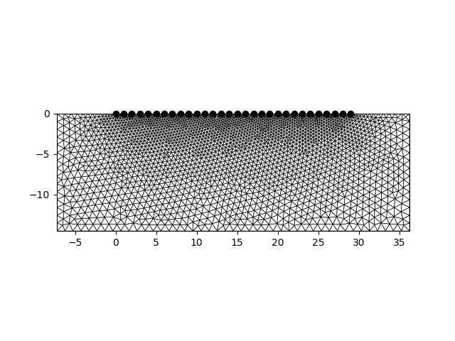
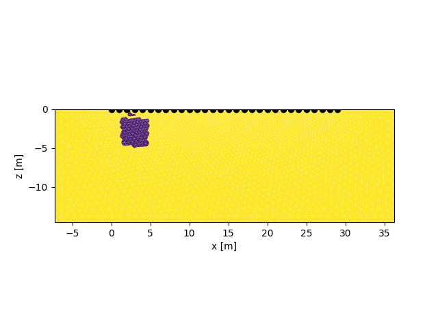
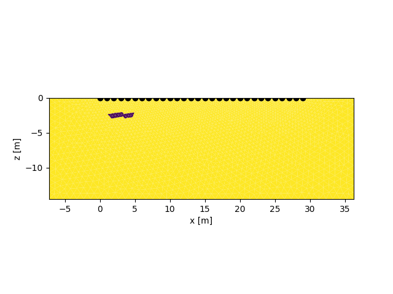
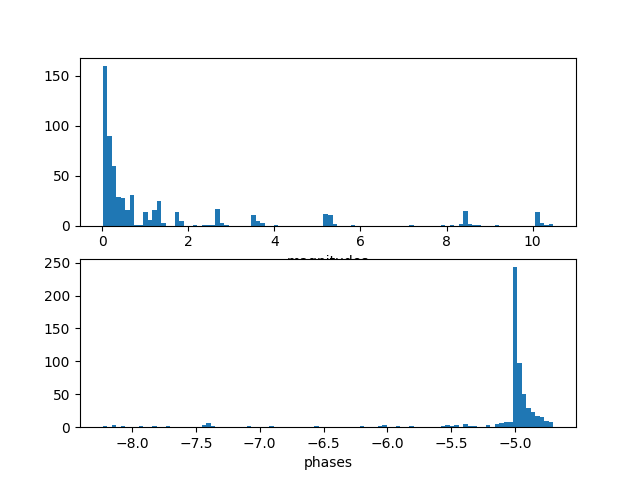
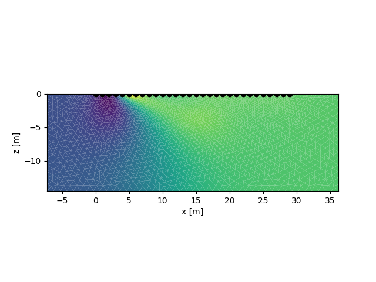
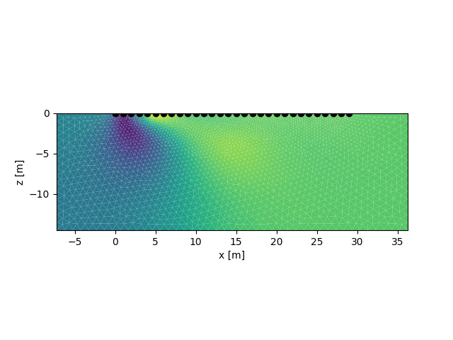

Note
Click here to download the full example code
Single frequency synthetic study






Out:
This grid was sorted using CutMcK. The nodes were resorted!
Triangular grid found
attempting modeling
b' ######### CMod ############\nLicence:\nCopyright \xc2\xa9 1990-2020 Andreas Kemna <kemna@geo.uni-bonn.de>\nCopyright \xc2\xa9 2008-2020 CRTomo development team (see AUTHORS file)\nPermission is hereby granted, free of charge, to any person obtaining a copy of\nthis software and associated documentation files (the \xe2\x80\x9cSoftware\xe2\x80\x9d), to deal in\nthe Software without restriction, including without limitation the rights to\nuse, copy, modify, merge, publish, distribute, sublicense, and/or sell copies\nof the Software, and to permit persons to whom the Software is furnished to do\nso, subject to the following conditions:\n\nThe above copyright notice and this permission notice shall be included in all\ncopies or substantial portions of the Software.\n\nTHE SOFTWARE IS PROVIDED \xe2\x80\x9cAS IS\xe2\x80\x9d, WITHOUT WARRANTY OF ANY KIND, EXPRESS OR\nIMPLIED, INCLUDING BUT NOT LIMITED TO THE WARRANTIES OF MERCHANTABILITY,\nFITNESS FOR A PARTICULAR PURPOSE AND NONINFRINGEMENT. IN NO EVENT SHALL THE\nAUTHORS OR COPYRIGHT HOLDERS BE LIABLE FOR ANY CLAIM, DAMAGES OR OTHER\nLIABILITY, WHETHER IN AN ACTION OF CONTRACT, TORT OR OTHERWISE, ARISING FROM,\nOUT OF OR IN CONNECTION WITH THE SOFTWARE OR THE USE OR OTHER DEALINGS IN THE\nSOFTWARE.\n \n \n CRMod Process_ID :: 99035\n OpenMP max threads: 4\n Git-Branch master\n Commit-ID 85c7db34c4d77d51aa595704ccccff586eff89c8\n Created Wed-May-13-08:58:54-2020\n Compiler \n OS GNU/Linux\n\n Reading Input-Files\n++ check 1\r++ check 2 done!\n\rGetting voltage 1\rGetting voltage 2\rGetting voltage 3\rGetting voltage 4\rGetting voltage 5\rGetting voltage 6\rGetting voltage 7\rGetting voltage 8\rGetting voltage 9\rGetting voltage 10\rGetting voltage 11\rGetting voltage 12\rGetting voltage 13\rGetting voltage 14\rGetting voltage 15\rGetting voltage 16\rGetting voltage 17\rGetting voltage 18\rGetting voltage 19\rGetting voltage 20\rGetting voltage 21\rGetting voltage 22\rGetting voltage 23\rGetting voltage 24\rGetting voltage 25\rGetting voltage 26\rGetting voltage 27\rGetting voltage 28\rGetting voltage 29\rGetting voltage 30\rGetting voltage 31\rGetting voltage 32\rGetting voltage 33\rGetting voltage 34\rGetting voltage 35\rGetting voltage 36\rGetting voltage 37\rGetting voltage 38\rGetting voltage 39\rGetting voltage 40\rGetting voltage 41\rGetting voltage 42\rGetting voltage 43\rGetting voltage 44\rGetting voltage 45\rGetting voltage 46\rGetting voltage 47\rGetting voltage 48\rGetting voltage 49\rGetting voltage 50\rGetting voltage 51\rGetting voltage 52\rGetting voltage 53\rGetting voltage 54\rGetting voltage 55\rGetting voltage 56\rGetting voltage 57\rGetting voltage 58\rGetting voltage 59\rGetting voltage 60\rGetting voltage 61\rGetting voltage 62\rGetting voltage 63\rGetting voltage 64\rGetting voltage 65\rGetting voltage 66\rGetting voltage 67\rGetting voltage 68\rGetting voltage 69\rGetting voltage 70\rGetting voltage 71\rGetting voltage 72\rGetting voltage 73\rGetting voltage 74\rGetting voltage 75\rGetting voltage 76\rGetting voltage 77\rGetting voltage 78\rGetting voltage 79\rGetting voltage 80\rGetting voltage 81\rGetting voltage 82\rGetting voltage 83\rGetting voltage 84\rGetting voltage 85\rGetting voltage 86\rGetting voltage 87\rGetting voltage 88\rGetting voltage 89\rGetting voltage 90\rGetting voltage 91\rGetting voltage 92\rGetting voltage 93\rGetting voltage 94\rGetting voltage 95\rGetting voltage 96\rGetting voltage 97\rGetting voltage 98\rGetting voltage 99\rGetting voltage 100\rGetting voltage 101\rGetting voltage 102\rGetting voltage 103\rGetting voltage 104\rGetting voltage 105\rGetting voltage 106\rGetting voltage 107\rGetting voltage 108\rGetting voltage 109\rGetting voltage 110\rGetting voltage 111\rGetting voltage 112\rGetting voltage 113\rGetting voltage 114\rGetting voltage 115\rGetting voltage 116\rGetting voltage 117\rGetting voltage 118\rGetting voltage 119\rGetting voltage 120\rGetting voltage 121\rGetting voltage 122\rGetting voltage 123\rGetting voltage 124\rGetting voltage 125\rGetting voltage 126\rGetting voltage 127\rGetting voltage 128\rGetting voltage 129\rGetting voltage 130\rGetting voltage 131\rGetting voltage 132\rGetting voltage 133\rGetting voltage 134\rGetting voltage 135\rGetting voltage 136\rGetting voltage 137\rGetting voltage 138\rGetting voltage 139\rGetting voltage 140\rGetting voltage 141\rGetting voltage 142\rGetting voltage 143\rGetting voltage 144\rGetting voltage 145\rGetting voltage 146\rGetting voltage 147\rGetting voltage 148\rGetting voltage 149\rGetting voltage 150\rGetting voltage 151\rGetting voltage 152\rGetting voltage 153\rGetting voltage 154\rGetting voltage 155\rGetting voltage 156\rGetting voltage 157\rGetting voltage 158\rGetting voltage 159\rGetting voltage 160\rGetting voltage 161\rGetting voltage 162\rGetting voltage 163\rGetting voltage 164\rGetting voltage 165\rGetting voltage 166\rGetting voltage 167\rGetting voltage 168\rGetting voltage 169\rGetting voltage 170\rGetting voltage 171\rGetting voltage 172\rGetting voltage 173\rGetting voltage 174\rGetting voltage 175\rGetting voltage 176\rGetting voltage 177\rGetting voltage 178\rGetting voltage 179\rGetting voltage 180\rGetting voltage 181\rGetting voltage 182\rGetting voltage 183\rGetting voltage 184\rGetting voltage 185\rGetting voltage 186\rGetting voltage 187\rGetting voltage 188\rGetting voltage 189\rGetting voltage 190\rGetting voltage 191\rGetting voltage 192\rGetting voltage 193\rGetting voltage 194\rGetting voltage 195\rGetting voltage 196\rGetting voltage 197\rGetting voltage 198\rGetting voltage 199\rGetting voltage 200\rGetting voltage 201\rGetting voltage 202\rGetting voltage 203\rGetting voltage 204\rGetting voltage 205\rGetting voltage 206\rGetting voltage 207\rGetting voltage 208\rGetting voltage 209\rGetting voltage 210\rGetting voltage 211\rGetting voltage 212\rGetting voltage 213\rGetting voltage 214\rGetting voltage 215\rGetting voltage 216\rGetting voltage 217\rGetting voltage 218\rGetting voltage 219\rGetting voltage 220\rGetting voltage 221\rGetting voltage 222\rGetting voltage 223\rGetting voltage 224\rGetting voltage 225\rGetting voltage 226\rGetting voltage 227\rGetting voltage 228\rGetting voltage 229\rGetting voltage 230\rGetting voltage 231\rGetting voltage 232\rGetting voltage 233\rGetting voltage 234\rGetting voltage 235\rGetting voltage 236\rGetting voltage 237\rGetting voltage 238\rGetting voltage 239\rGetting voltage 240\rGetting voltage 241\rGetting voltage 242\rGetting voltage 243\rGetting voltage 244\rGetting voltage 245\rGetting voltage 246\rGetting voltage 247\rGetting voltage 248\rGetting voltage 249\rGetting voltage 250\rGetting voltage 251\rGetting voltage 252\rGetting voltage 253\rGetting voltage 254\rGetting voltage 255\rGetting voltage 256\rGetting voltage 257\rGetting voltage 258\rGetting voltage 259\rGetting voltage 260\rGetting voltage 261\rGetting voltage 262\rGetting voltage 263\rGetting voltage 264\rGetting voltage 265\rGetting voltage 266\rGetting voltage 267\rGetting voltage 268\rGetting voltage 269\rGetting voltage 270\rGetting voltage 271\rGetting voltage 272\rGetting voltage 273\rGetting voltage 274\rGetting voltage 275\rGetting voltage 276\rGetting voltage 277\rGetting voltage 278\rGetting voltage 279\rGetting voltage 280\rGetting voltage 281\rGetting voltage 282\rGetting voltage 283\rGetting voltage 284\rGetting voltage 285\rGetting voltage 286\rGetting voltage 287\rGetting voltage 288\rGetting voltage 289\rGetting voltage 290\rGetting voltage 291\rGetting voltage 292\rGetting voltage 293\rGetting voltage 294\rGetting voltage 295\rGetting voltage 296\rGetting voltage 297\rGetting voltage 298\rGetting voltage 299\rGetting voltage 300\rGetting voltage 301\rGetting voltage 302\rGetting voltage 303\rGetting voltage 304\rGetting voltage 305\rGetting voltage 306\rGetting voltage 307\rGetting voltage 308\rGetting voltage 309\rGetting voltage 310\rGetting voltage 311\rGetting voltage 312\rGetting voltage 313\rGetting voltage 314\rGetting voltage 315\rGetting voltage 316\rGetting voltage 317\rGetting voltage 318\rGetting voltage 319\rGetting voltage 320\rGetting voltage 321\rGetting voltage 322\rGetting voltage 323\rGetting voltage 324\rGetting voltage 325\rGetting voltage 326\rGetting voltage 327\rGetting voltage 328\rGetting voltage 329\rGetting voltage 330\rGetting voltage 331\rGetting voltage 332\rGetting voltage 333\rGetting voltage 334\rGetting voltage 335\rGetting voltage 336\rGetting voltage 337\rGetting voltage 338\rGetting voltage 339\rGetting voltage 340\rGetting voltage 341\rGetting voltage 342\rGetting voltage 343\rGetting voltage 344\rGetting voltage 345\rGetting voltage 346\rGetting voltage 347\rGetting voltage 348\rGetting voltage 349\rGetting voltage 350\rGetting voltage 351\rGetting voltage 352\rGetting voltage 353\rGetting voltage 354\rGetting voltage 355\rGetting voltage 356\rGetting voltage 357\rGetting voltage 358\rGetting voltage 359\rGetting voltage 360\rGetting voltage 361\rGetting voltage 362\rGetting voltage 363\rGetting voltage 364\rGetting voltage 365\rGetting voltage 366\rGetting voltage 367\rGetting voltage 368\rGetting voltage 369\rGetting voltage 370\rGetting voltage 371\rGetting voltage 372\rGetting voltage 373\rGetting voltage 374\rGetting voltage 375\rGetting voltage 376\rGetting voltage 377\rGetting voltage 378\rGetting voltage 379\rGetting voltage 380\rGetting voltage 381\rGetting voltage 382\rGetting voltage 383\rGetting voltage 384\rGetting voltage 385\rGetting voltage 386\rGetting voltage 387\rGetting voltage 388\rGetting voltage 389\rGetting voltage 390\rGetting voltage 391\rGetting voltage 392\rGetting voltage 393\rGetting voltage 394\rGetting voltage 395\rGetting voltage 396\rGetting voltage 397\rGetting voltage 398\rGetting voltage 399\rGetting voltage 400\rGetting voltage 401\rGetting voltage 402\rGetting voltage 403\rGetting voltage 404\rGetting voltage 405\rGetting voltage 406\rGetting voltage 407\rGetting voltage 408\rGetting voltage 409\rGetting voltage 410\rGetting voltage 411\rGetting voltage 412\rGetting voltage 413\rGetting voltage 414\rGetting voltage 415\rGetting voltage 416\rGetting voltage 417\rGetting voltage 418\rGetting voltage 419\rGetting voltage 420\rGetting voltage 421\rGetting voltage 422\rGetting voltage 423\rGetting voltage 424\rGetting voltage 425\rGetting voltage 426\rGetting voltage 427\rGetting voltage 428\rGetting voltage 429\rGetting voltage 430\rGetting voltage 431\rGetting voltage 432\rGetting voltage 433\rGetting voltage 434\rGetting voltage 435\rGetting voltage 436\rGetting voltage 437\rGetting voltage 438\rGetting voltage 439\rGetting voltage 440\rGetting voltage 441\rGetting voltage 442\rGetting voltage 443\rGetting voltage 444\rGetting voltage 445\rGetting voltage 446\rGetting voltage 447\rGetting voltage 448\rGetting voltage 449\rGetting voltage 450\rGetting voltage 451\rGetting voltage 452\rGetting voltage 453\rGetting voltage 454\rGetting voltage 455\rGetting voltage 456\rGetting voltage 457\rGetting voltage 458\rGetting voltage 459\rGetting voltage 460\rGetting voltage 461\rGetting voltage 462\rGetting voltage 463\rGetting voltage 464\rGetting voltage 465\rGetting voltage 466\rGetting voltage 467\rGetting voltage 468\rGetting voltage 469\rGetting voltage 470\rGetting voltage 471\rGetting voltage 472\rGetting voltage 473\rGetting voltage 474\rGetting voltage 475\rGetting voltage 476\rGetting voltage 477\rGetting voltage 478\rGetting voltage 479\rGetting voltage 480\rGetting voltage 481\rGetting voltage 482\rGetting voltage 483\rGetting voltage 484\rGetting voltage 485\rGetting voltage 486\rGetting voltage 487\rGetting voltage 488\rGetting voltage 489\rGetting voltage 490\rGetting voltage 491\rGetting voltage 492\rGetting voltage 493\rGetting voltage 494\rGetting voltage 495\rGetting voltage 496\rGetting voltage 497\rGetting voltage 498\rGetting voltage 499\rGetting voltage 500\rGetting voltage 501\rGetting voltage 502\rGetting voltage 503\rGetting voltage 504\rGetting voltage 505\rGetting voltage 506\rGetting voltage 507\rGetting voltage 508\rGetting voltage 509\rGetting voltage 510\rGetting voltage 511\rGetting voltage 512\rGetting voltage 513\rGetting voltage 514\rGetting voltage 515\rGetting voltage 516\rGetting voltage 517\rGetting voltage 518\rGetting voltage 519\rGetting voltage 520\rGetting voltage 521\rGetting voltage 522\rGetting voltage 523\rGetting voltage 524\rGetting voltage 525\rGetting voltage 526\rGetting voltage 527\rGetting voltage 528\rGetting voltage 529\rGetting voltage 530\rGetting voltage 531\rGetting voltage 532\rGetting voltage 533\rGetting voltage 534\rGetting voltage 535\rGetting voltage 536\rGetting voltage 537\rGetting voltage 538\rGetting voltage 539\rGetting voltage 540\rGetting voltage 541\rGetting voltage 542\rGetting voltage 543\rGetting voltage 544\rGetting voltage 545\rGetting voltage 546\rGetting voltage 547\rGetting voltage 548\rGetting voltage 549\rGetting voltage 550\rGetting voltage 551\rGetting voltage 552\rGetting voltage 553\rGetting voltage 554\rGetting voltage 555\rGetting voltage 556\rGetting voltage 557\rGetting voltage 558\rGetting voltage 559\rGetting voltage 560\rGetting voltage 561\rGetting voltage 562\rGetting voltage 563\rGetting voltage 564\rGetting voltage 565\rGetting voltage 566\rGetting voltage 567\rGetting voltage 568\rGetting voltage 569\rGetting voltage 570\rGetting voltage 571\rGetting voltage 572\rGetting voltage 573\rGetting voltage 574\rGetting voltage 575\rGetting voltage 576\rGetting voltage 577\rGetting voltage 578\rGetting voltage 579\rGetting voltage 580\rGetting voltage 581\rGetting voltage 582\rGetting voltage 583\rGetting voltage 584\rGetting voltage 585\rGetting voltage 586\rGetting voltage 587\rGetting voltage 588\rGetting voltage 589\rGetting voltage 590\rGetting voltage 591\rGetting voltage 592\rGetting voltage 593\rGetting voltage 594\rGetting voltage 595\rGetting voltage 596\rGetting voltage 597\rGetting voltage 598\rGetting voltage 599\rGetting voltage 600\rGetting voltage 601\rGetting voltage 602\rGetting voltage 603\rGetting voltage 604\rGetting voltage 605\rGetting voltage 606\rGetting voltage 607\rGetting voltage 608\rGetting voltage 609\rGetting voltage 610\rGetting voltage 611\rGetting voltage 612\rGetting voltage 613\rGetting voltage 614\rGetting voltage 615 No electrode cap file\n \n Rescheduling..\n less nodes than wavenumbers\n OpenMP threads: 3( 4)\n\n\r Calculating Potentials : Wavenumber 1 \r Calculating Potentials : Wavenumber 2 \r Calculating Potentials : Wavenumber 3 \r Calculating Potentials : Wavenumber 4 \r Calculating Potentials : Wavenumber 5 \r Calculating Potentials : Wavenumber 6 \r Calculating Potentials : Wavenumber 7 \r Calculating Potentials : Wavenumber 8 \r Calculating Potentials : Wavenumber 9 \r Calculating Potentials : Wavenumber 10 \r Calculating Potentials : Wavenumber 11 done, now processing\n solution time 0d/ 0h/ 0m/ 0s/ 615ms\n\n Modelling completedSTOP 0\n'
reading voltages
Attempting inversion in directory: /tmp/tmp88u2x_u9
Using binary: /home/mweigand/bin/CRTomo
Calling CRTomo
Inversion finished
Attempting to import the results
is robust True
Info: res_m.diag not found: /tmp/tmp88u2x_u9/inv/res_m.diag
/home/mweigand/Programme/crtomo_tools/examples/02_simple_inversion
Info: ata.diag not found: /tmp/tmp88u2x_u9/inv/ata.diag
/home/mweigand/Programme/crtomo_tools/examples/02_simple_inversion
Statistics of last iteration:
iteration 3
main_iteration 3
it_type DC/IP
type main
dataRMS 1.001
magRMS 9.0
phaRMS 1.0
lambda 218.4
roughness 3.589
cgsteps 11.0
nrdata 610.0
steplength 1.0
stepsize 0.000068
l1ratio 8.0
Name: 14, dtype: object
{'forward_model': None, 'measurements': [0, 1], 'measurement_errors': None, 'error_norm_factor_mag': None, 'error_norm_factor_pha': None, 'sensitivities': None, 'potentials': None, 'inversion': {'rmag': [0, 1, 2, 3], 'rpha': [4, 5, 6, 7], 'cre_cim': [[8, 9], [10, 11], [12, 13], [14, 15]], 'cre': [8, 10, 12, 14], 'cim': [9, 11, 13, 15], 'fwd_response_rmag': [2, 5, 8, 11], 'fwd_response_rpha': [3, 6, 9, 12], 'fwd_response_wdfak': [4, 7, 10, 13], 'l1_dw_log10_norm': 16}, 'prior_model': None}
import crtomo
grid = crtomo.crt_grid.create_surface_grid(
nr_electrodes=30, spacing=1, char_lengths=[0.3, 1, 1, 1]
)
fig, ax = grid.plot_grid()
fig.savefig('grid.jpg')
man = crtomo.tdMan(grid=grid)
pid_mag, pid_pha = man.add_homogeneous_model(
magnitude=100, phase=-5
)
# import IPython
# IPython.embed()
man.parman.modify_area(
pid_mag,
xmin=1, xmax=5,
zmin=-5, zmax=-1,
value=10
)
man.parman.modify_area(
pid_pha,
xmin=1, xmax=5,
zmin=-3, zmax=-2,
value=-30
)
import shapely.geometry
polygon = shapely.geometry.Polygon((
(2, 0), (4, -1), (2, -1)
))
man.parman.modify_polygon(pid_mag, polygon, 3)
fig, ax = man.show_parset(pid_mag)
fig.savefig('model_magnitude.jpg')
fig, ax = man.show_parset(pid_pha)
fig.savefig('model_phase.jpg')
man.configs.gen_dipole_dipole(skipc=0)
man.configs.gen_dipole_dipole(skipc=1)
man.configs.gen_dipole_dipole(skipc=2)
import pylab as plt
# conduct forward modeling
rmag_rpha_mod = man.measurements()
fig, axes = plt.subplots(2, 1)
ax = axes[0]
ax.hist(rmag_rpha_mod[:, 0], 100)
ax.set_xlabel('magnitudes')
ax = axes[1]
ax.hist(rmag_rpha_mod[:, 1], 100)
ax.set_xlabel('phases')
fig.savefig('modeled_data.jpg')
# now add syntehtic noise
# TODO
man.save_measurements('volt.dat')
tdman = crtomo.tdMan(grid=grid)
tdman.read_voltages('volt.dat')
tdman.invert()
print(tdman.a)
fig, ax = tdman.show_parset(tdman.a['inversion']['rmag'][-1])
fig.savefig('inversion_result_rmag.jpg')
fig, ax = tdman.show_parset(tdman.a['inversion']['rpha'][-1])
fig.savefig('inversion_result_rpha.jpg')
Total running time of the script: ( 1 minutes 5.503 seconds)